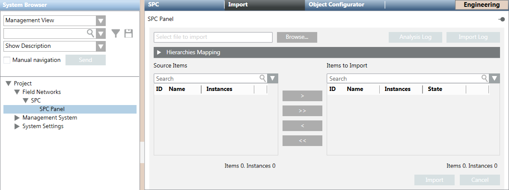

Import the SPC Panel Configuration File
This procedure is part of the workflow for integrating an SPC intrusion system.
Prerequisites
- You configured an SPC panel and associated it to an SPC driver with settings that match those of the panel, and the driver is running.
Import the Configuration File
- To speed configuration, make sure the Desigo CC Transaction Mode is set to
Simpleor the Automatic Switch of Transaction Mode is set toTrue.
The automatic switch setting is recommended. Without it, to re-enable the logs, you need to set the Transaction Mode toLoggingat the end of the configuration procedure.
- Select Project > Field Networks > [SPC Network] > [SPC panel].
- Select the Import tab.
- Click Browse to locate and select the configuration file for this panel.
- The Source Items list populates with the items you can import.
- (Optional) Open the Hierarchies Mapping expander if you want to link one or more data structures of the configuration file to the optional views:
a. In System Browser, select the optional view (for example, the logical view or physical view).
b. Drag the node of the optional view you want to link as root node into an available data structure listed in the Hierarchies Mapping expander.
NOTE: The Hierarchies Mapping configuration cannot be modified after the import. - In the Source Items list, select the item, click
 and then click Import.
and then click Import. - The configuration data is available in System Browser.
- The Import Log button becomes available to show the import log.
NOTE: In case of problems, see Handling SPC Import Error Conditions. - A backup copy of the imported file is saved in the project folder, in the shared\Imported_Config_Files\[subsystem name]\ subfolder.
The file is compressed into a ZIP file named after the current date and time. For example, 2021-10-22_13-52-07.zip.
NOTE: See also the configuration procedure of the backup folder (search for Handling Backup Size of Imported Files).
You can control the disk space occupancy, and also disable the backup copy altogether.
